NumericalSample¶
-
class
NumericalSample(*args)¶ Sample of real vectors.
- Available constructors:
NumericalSample(size, dim)
NumericalSample(size, point)
NumericalSample(other, first, last)
Parameters: size : int, 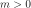, optional
The sample size. Default creates an empty sample with dimension 1.
dimension : int, 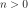, optional
The real vectors dimension. Default creates an empty sample with dimension 1.
point :
NumericalPointor flat (1d) array, list or tuple of floats, optionalThe point that will be repeated along the sample. Default creates a sample filled with zeros (null vectors).
other :
NumericalSampleThe sample contains points to copy.
first : int, 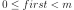
The index of the first point to copy.
last : int, 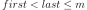, optional
The index after the last point to copy.
See also
Examples
Create a NumericalSample
>>> import openturns as ot >>> import numpy as np >>> sample = ot.NumericalSample(3, 2) >>> print(sample) 0 : [ 0 0 ] 1 : [ 0 0 ] 2 : [ 0 0 ] >>> sample = ot.NumericalSample(3, [1.0, 2.0]) >>> print(sample) 0 : [ 1 2 ] 1 : [ 1 2 ] 2 : [ 1 2 ]
Create a NumericalSample from a (2d) array, list or tuple
>>> import numpy as np >>> sample = ot.NumericalSample(np.array([(1.0, 2.0), (3.0, 4.0), (5.0, 6.0)]))
and back
>>> np.array(sample) array([[ 1., 2.], [ 3., 4.], [ 5., 6.]])
Eventually samples may also be generated from probability distributions or experiments
>>> random_sample = ot.Normal(2).getSample(10) >>> experiment = ot.LHSExperiment(ot.Normal(2), 10).generate()
Translation: addition or subtraction of a (compatible) sample or a point, or a scalar which is promoted into a point of compatible dimension with equal components
>>> print(sample + sample) 0 : [ 2 4 ] 1 : [ 6 8 ] 2 : [ 10 12 ] >>> print(sample - sample) 0 : [ 0 0 ] 1 : [ 0 0 ] 2 : [ 0 0 ] >>> print(sample - sample[0]) 0 : [ 0 0 ] 1 : [ 2 2 ] 2 : [ 4 4 ] >>> print(sample - sample[0, 0]) 0 : [ 0 1 ] 1 : [ 2 3 ] 2 : [ 4 5 ]
Scaling: right multiplication or division of a (compatible) square matrix with the points in the sample (this can be used e.g. for rotating all the points in a sample)
>>> angle = np.pi / 4.0 >>> rotation_matrix = ot.SquareMatrix([[np.cos(angle), -np.sin(angle)], ... [np.sin(angle), np.cos(angle)]]) >>> rotated_sample = sample * rotation_matrix >>> np.testing.assert_array_almost_equal(rotated_sample / rotation_matrix, sample)
Methods
ImportFromCSVFile(*args)Static method for building a sample from a CSV file. ImportFromTextFile(*args)Static method for building a sample from a text file. add(*args)Append a vector (in-place). clear()computeCenteredMoment(k)Estimate componentwise centered moments. computeCovariance()Estimate the covariance matrix. computeEmpiricalCDF(point[, tail])Estimate the empirical cumulative distribution function (ECDF). computeKendallTau()Estimate the Kendall coefficients matrix. computeKurtosis()Estimate the componentwise kurtosis (4th order centered normalized moment). computeLinearCorrelation()(ditch me?) computeMean()Estimate the mean vector. computeMedian()Estimate the componentwise medians (50%-quantiles). computePearsonCorrelation()Estimate the Pearson correlation matrix. computeQuantile(prob)Estimate the quantile of the joint distribution underlying the sample. computeQuantilePerComponent(prob)Estimate the componentwise quantiles. computeRange()Compute the range per component. computeRawMoment(k)Compute the raw (non-centered) moment per component. computeSkewness()Estimate the componentwise skewness (3rd order centered normalized moment). computeSpearmanCorrelation()Estimate the Spearman correlation matrix. computeStandardDeviation()Compute the Cholesky factor of the covariance matrix. computeStandardDeviationPerComponent()Estimate the componentwise standard deviations. computeVariance()Estimate the componentwise variances. erase(*args)Erase point(s) at or between index(es) (in-place). exportToCSVFile(*args)Dump the sample to a CSV file. find(point)Get the position of a point in the sample. getClassName()Accessor to the object’s name. getDescription()Accessor to the componentwise description. getDimension()Accessor to the sample’s dimension. getId()Accessor to the object’s id. getImplementation(*args)Accessor to the underlying implementation. getMarginal(*args)Accessor to sample marginal(s) (column(s)). getMax()Accessor to the componentwise maximum values. getMin()Accessor to the componentwise minimum values. getName()Accessor to the object’s name. getSize()Accessor to the sample size. rank(*args)Compute the sample (componentwise) ranks. setDescription(description)Accessor to the componentwise description. setName(name)Accessor to the object’s name. sort(*args)Sort the sample. sortAccordingToAComponent(index)Sort the sample according to the given component. sortUnique()Sort the sample and remove duplicate points. split(index)Trunk the sample. stack(sample)Stack (horizontally) the given sample to the current one (in-place). -
__init__(*args)¶
-
static
ImportFromCSVFile(*args)¶ Static method for building a sample from a CSV file.
Parameters: file_name : str
Path to CSV file.
separator : str
Separating string. Default uses csv-file-separator from the
ResourceMap.Returns: sample :
NumericalSampleSample loaded from the CSV file.
See also
Notes
The file may or may not contain a header line (columns spanned with strings delimited with quotes). If it does contain such a header line, it will be used for setting the sample description using
setDescription().Examples
>>> import openturns as ot
Let’s first create a sample CSV file
>>> ot.RandomGenerator.SetSeed(0) >>> sample = ot.Normal(2).getSample(30) >>> sample.exportToCSVFile('sample.csv')
And load it back
>>> loaded_sample = ot.NumericalSample.ImportFromCSVFile('sample.csv') >>> assert sample == loaded_sample
-
static
ImportFromTextFile(*args)¶ Static method for building a sample from a text file.
Parameters: file_name : str
Path to text file.
separator : str
Separating string. Default uses a blank space.
Returns: sample :
NumericalSampleSample loaded from the text file.
See also
Notes
The file may or may not contain a header line (columns spanned with strings delimited with quotes). If it does contain such a header line, it will be used for setting the sample description using
setDescription().Examples
>>> import openturns as ot
Let’s first create a sample text file
>>> ot.RandomGenerator.SetSeed(0) >>> sample = ot.Normal(2).getSample(30) >>> sample.exportToCSVFile('sample.txt', ' ')
And load it back
>>> loaded_sample = ot.NumericalSample.ImportFromTextFile('sample.txt') >>> assert sample == loaded_sample
-
add(*args)¶ Append a vector (in-place).
Parameters: point : sequence of float
The point to append.
Examples
>>> import openturns as ot >>> sample = ot.NumericalSample(3, 2) >>> sample.add([1.0, 2.0]) >>> print(sample) 0 : [ 0 0 ] 1 : [ 0 0 ] 2 : [ 0 0 ] 3 : [ 1 2 ]
-
computeCenteredMoment(k)¶ Estimate componentwise centered moments.
Parameters: k : int
The centered moment’s order.
Returns: m :
NumericalPointComponentwise centered moment of order 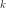 estimated from the sample.
Notes
The centered moment of order is estimated as follows:
where 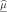 is the estimator of the mean.
These estimators are the natural (possibly biased) estimators. For unbiased estimators use the other dedicated methods such as
computeVariance()for the variance.Examples
>>> import openturns as ot >>> ot.RandomGenerator.SetSeed(0) >>> sample = ot.Normal(2).getSample(30) >>> print(sample.computeCenteredMoment(2)) [0.915126,0.873119]
-
computeCovariance()¶ Estimate the covariance matrix.
Returns: covariance :
CovarianceMatrixCovariance matrix estimated from the sample.
Notes
The covariance matrix is estimated as follows:
where denotes the estimate of the mean.
This is an unbiased estimator.
Examples
>>> import openturns as ot >>> ot.RandomGenerator.SetSeed(0) >>> sample = ot.Normal(2).getSample(30) >>> print(sample.computeCovariance()) [[ 0.946682 0.0182104 ] [ 0.0182104 0.903226 ]]
-
computeEmpiricalCDF(point, tail=False)¶ Estimate the empirical cumulative distribution function (ECDF).
Parameters: x : sequence of float
CDF input.
survival : bool, optional
A flag telling whether this should estimate the empirical cumulative distribution function or the empirical survival function. Default is False and estimates the CDF.
Returns: p : float,

Empirical CDF or SF value at point x.
Notes
The empirical cumulative distribution function (CDF) is estimated as follows:
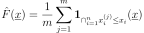
The empirical survival function (SF) is estimated in a similar way:
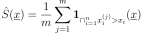
Examples
>>> import openturns as ot >>> ot.RandomGenerator.SetSeed(0) >>> sample = ot.Normal(2).getSample(30) >>> print(sample.computeEmpiricalCDF(sample[0])) 0.1
-
computeKendallTau()¶ Estimate the Kendall coefficients matrix.
Returns: tau :
CorrelationMatrixKendall coefficients matrix estimated from the sample.
Notes
This uses an external implementation provided under the Boost Software License by David Simcha based on the paper by [Knight1966]. It actually switches between two implementations depending on the sample size:
- The most basic implementation performing in 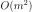 is used when
the sample size is less than NumericalSampleImplementation-SmallKendallTau
from the
ResourceMap. - The other more complex implementation performing in 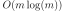 is used for larger samples.
Examples
>>> import openturns as ot >>> ot.RandomGenerator.SetSeed(0) >>> sample = ot.Normal(2).getSample(30) >>> print(sample.computeKendallTau()) [[ 1 0.00689655 ] [ 0.00689655 1 ]]
- The most basic implementation performing in 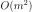 is used when
the sample size is less than NumericalSampleImplementation-SmallKendallTau
from the
-
computeKurtosis()¶ Estimate the componentwise kurtosis (4th order centered normalized moment).
Returns: kurtosis :
NumericalPointComponentwise kurtosis estimated from the sample.
Notes
The componentwise kurtosis are estimated as follows:

where is the estimate of the mean.
This estimator is unbiased.
Examples
>>> import openturns as ot >>> ot.RandomGenerator.SetSeed(0) >>> sample = ot.Normal(2).getSample(30) >>> print(sample.computeKurtosis()) [3.27647,2.40275]
-
computeLinearCorrelation()¶ (ditch me?)
-
computeMean()¶ Estimate the mean vector.
Returns: mean :
NumericalPointMean vector estimated from the sample.
Notes
The mean is estimated as follows:
Examples
>>> import openturns as ot >>> ot.RandomGenerator.SetSeed(0) >>> sample = ot.Normal(2).getSample(30) >>> print(sample.computeMean()) [-0.0512622,0.136653]
-
computeMedian()¶ Estimate the componentwise medians (50%-quantiles).
Returns: median :
NumericalPointMedian vector estimated from the sample.
See also
Examples
>>> import openturns as ot >>> ot.RandomGenerator.SetSeed(0) >>> sample = ot.Normal(2).getSample(30) >>> print(sample.computeMedian()) [0.221141,0.108703]
-
computePearsonCorrelation()¶ Estimate the Pearson correlation matrix.
Returns: rho :
CorrelationMatrixPearson correlation matrix estimated from the sample.
Notes
The Pearson correlation matrix is estimated as follows:
where 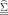 denotes the estimate of the covariance.
Examples
>>> import openturns as ot >>> ot.RandomGenerator.SetSeed(0) >>> sample = ot.Normal(2).getSample(30) >>> print(sample.computePearsonCorrelation()) [[ 1 0.0196933 ] [ 0.0196933 1 ]]
-
computeQuantile(prob)¶ Estimate the quantile of the joint distribution underlying the sample.
Parameters: p : float,
Input probability level.
Returns: quantile :
NumericalPointQuantile of the joint distribution at probability level
 ,
estimated from the sample.
,
estimated from the sample.Raises: NotImplementedYetError : If the dimension is greater than 1.
See also
Examples
>>> import openturns as ot >>> ot.RandomGenerator.SetSeed(0) >>> sample = ot.Normal(1).getSample(30) >>> print(sample.computeQuantile(.2)) [-0.947394]
-
computeQuantilePerComponent(prob)¶ Estimate the componentwise quantiles.
Parameters: p : float,
Input probability level.
Returns: quantile :
NumericalPointComponentwise quantile at probability level
, estimated from the
sample.Notes
The present implementation interpolates the quantile between the two adjacent empirical quantiles ( and 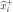):
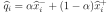
where 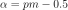.
Examples
>>> import openturns as ot >>> ot.RandomGenerator.SetSeed(0) >>> sample = ot.Normal(2).getSample(30) >>> print(sample.computeQuantilePerComponent(0.2)) [-0.696412,-0.767092]
-
computeRange()¶ Compute the range per component.
Returns: range :
NumericalPointComponentwise ranges estimated from the sample.
Notes
The statistical range is defined as the deviation between the maximal and the minimal value of the sample.
Examples
>>> import openturns as ot >>> ot.RandomGenerator.SetSeed(0) >>> sample = ot.Normal(2).getSample(30) >>> print(sample.computeRange()) [4.02827,3.49949]
-
computeRawMoment(k)¶ Compute the raw (non-centered) moment per component.
Parameters: k : int, 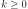
Componentwise moment’s order.
Returns: moments :
NumericalPointComponentwise moments estimated from the sample.
Notes
The (raw) moment of order is estimated as follows:
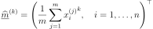
Examples
>>> import openturns as ot >>> ot.RandomGenerator.SetSeed(0) >>> sample = ot.Normal(2).getSample(30) >>> print(sample.computeRawMoment(2)) [0.917754,0.891793]
-
computeSkewness()¶ Estimate the componentwise skewness (3rd order centered normalized moment).
Returns: skewness :
NumericalPointComponentwise skewness estimated from the sample.
Notes
The componentwise skewnesses are estimated as follows:
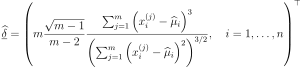
where is the estimate of the mean.
This is an unbiased estimator.
Examples
>>> import openturns as ot >>> ot.RandomGenerator.SetSeed(0) >>> sample = ot.Normal(2).getSample(30) >>> print(sample.computeSkewness()) [-0.69393,0.231931]
-
computeSpearmanCorrelation()¶ Estimate the Spearman correlation matrix.
Returns: rho :
CorrelationMatrixSpearman correlation matrix estimated from the sample.
See also
Notes
The Spearman correlation matrix is estimated as the Pearson correlation matrix of the ranks sample (i.e. using self.rank().computePearsonCorrelation()).
Examples
>>> import openturns as ot >>> ot.RandomGenerator.SetSeed(0) >>> sample = ot.Normal(2).getSample(30) >>> print(sample.computeSpearmanCorrelation()) [[ 1 -0.00556174 ] [ -0.00556174 1 ]]
-
computeStandardDeviation()¶ Compute the Cholesky factor of the covariance matrix.
Estimated from the sample.
Returns: L :
TriangularMatrixLower (left) Cholesky factor of the covariance matrix estimated from the sample.
Raises: RuntimeError : If the estimated covariance matrix is not positive definite. In
this case, you might want to estimate the covariance and manually shrink negative eigen values.
Examples
>>> import openturns as ot >>> ot.RandomGenerator.SetSeed(0) >>> sample = ot.Normal(2).getSample(30) >>> print(sample.computeStandardDeviation()) [[ 0.972976 0 ] [ 0.0187161 0.950198 ]]
-
computeStandardDeviationPerComponent()¶ Estimate the componentwise standard deviations.
Returns: standard_deviations :
NumericalPointComponentwise standard deviation estimated from the sample.
See also
Notes
The componentwise standard deviations are estimated as the square root of the componentwise variances.
Examples
>>> import openturns as ot >>> ot.RandomGenerator.SetSeed(0) >>> sample = ot.Normal(2).getSample(30) >>> print(sample.computeStandardDeviationPerComponent()) [0.972976,0.950382]
-
computeVariance()¶ Estimate the componentwise variances.
Returns: variances :
NumericalPointComponentwise variances estimated from the sample.
Notes
The componentwise variances are estimated as follows:
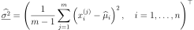
where is the estimate of the mean.
This estimator is unbiased.
Examples
>>> import openturns as ot >>> ot.RandomGenerator.SetSeed(0) >>> sample = ot.Normal(2).getSample(30) >>> print(sample.computeVariance()) [0.946682,0.903226]
-
erase(*args)¶ Erase point(s) at or between index(es) (in-place).
Parameters: f : int, 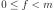
The index of the first point to erase.
l : int, 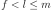, optional
The index after the last point to erase. Default uses l = f + 1 and only removes sample[f].
Returns
——-
erased_sample :
NumericalSampleErased sample [sample[:i_start:], sample[i_stop::]].
Examples
>>> import openturns as ot >>> sample = ot.NumericalSample([[i] for i in range(5)]) >>> print(sample) 0 : [ 0 ] 1 : [ 1 ] 2 : [ 2 ] 3 : [ 3 ] 4 : [ 4 ] >>> sample.erase(1, 3) >>> print(sample) 0 : [ 0 ] 1 : [ 3 ] 2 : [ 4 ]
-
exportToCSVFile(*args)¶ Dump the sample to a CSV file.
Parameters: file_name : str
Path to CSV file.
separator : str
Separating string. Default uses csv-file-separator from the
ResourceMap.See also
Notes
This will create a header line with componentwise descriptions (obtained from
getDescription()) between quotes as column names.Examples
>>> import openturns as ot >>> ot.RandomGenerator.SetSeed(0) >>> sample = ot.Normal(2).getSample(30) >>> sample.exportToCSVFile('sample.csv', '; ')
-
find(point)¶ Get the position of a point in the sample.
Parameters: point : sequence of float
The wanted point.
Returns: index : int,
Returns 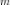 if the point does not belong to the sample.
Examples
>>> import openturns as ot >>> ot.RandomGenerator.SetSeed(0) >>> sample = ot.Normal(2).getSample(30) >>> print(sample.find(sample[10])) 10 >>> print(sample.find([0.0, 0.0])) 30
-
getClassName()¶ Accessor to the object’s name.
Returns: class_name : str
The object class name (object.__class__.__name__).
-
getDescription()¶ Accessor to the componentwise description.
Returns: description :
DescriptionDescription of the sample’s components.
See also
-
getDimension()¶ Accessor to the sample’s dimension.
Returns: n : int
The number of components of the points in the sample.
-
getId()¶ Accessor to the object’s id.
Returns: id : int
Internal unique identifier.
-
getImplementation(*args)¶ Accessor to the underlying implementation.
Returns: impl : Implementation
The implementation class.
-
getMarginal(*args)¶ Accessor to sample marginal(s) (column(s)).
Parameters: indices : int or sequence of int,
The index(es) of the wanted marginal(s).
Returns: sample :
NumericalSampleA subsample of the present sample with the requested marginal(s).
Notes
The
NumericalSamplealso implements slicing in its __getitem__ method.Examples
>>> import openturns as ot >>> ot.RandomGenerator.SetSeed(0) >>> sample = ot.Normal(10).getSample(3) >>> print(sample.getMarginal([1, 4])) [ X1 X4 ] 0 : [ -1.26617 -2.18139 ] 1 : [ 0.261018 -1.31178 ] 2 : [ 0.445785 0.473617 ]
-
getMax()¶ Accessor to the componentwise maximum values.
Returns: maximum_values :
NumericalPointComponentwise maximum values.
-
getMin()¶ Accessor to the componentwise minimum values.
Returns: minimum_values :
NumericalPointComponentwise minimum values.
-
getName()¶ Accessor to the object’s name.
Returns: name : str
The name of the object.
-
getSize()¶ Accessor to the sample size.
Returns: m : int
The number points in the sample.
-
rank(*args)¶ Compute the sample (componentwise) ranks.
Parameters: marginal_index : int, , optional
The component whose ranks are wanted. Default computes the ranks of all the components.
Returns: ranks :
NumericalSampleThe requested ranks.
Notes
The ranks of a 1d sample is a list of indices that sorts the points in the ascending order. Ties (equal points) are averaged.
Examples
>>> import openturns as ot >>> ot.RandomGenerator.SetSeed(0) >>> sample = ot.Normal(2).getSample(3) >>> print(sample) [ X0 X1 ] 0 : [ 0.608202 -1.26617 ] 1 : [ -0.438266 1.20548 ] 2 : [ -2.18139 0.350042 ] >>> print(sample.rank()) [ X0 X1 ] 0 : [ 2 0 ] 1 : [ 1 2 ] 2 : [ 0 1 ]
-
setDescription(description)¶ Accessor to the componentwise description.
Parameters: description : sequence of str
Description of the sample’s components.
See also
-
setName(name)¶ Accessor to the object’s name.
Parameters: name : str
The name of the object.
-
sort(*args)¶ Sort the sample.
Parameters: marginal_index : int, , optional
The component to sort. Default sorts the whole sample.
Returns: sorted_sample :
NumericalSampleThe requested sorted sample.
Examples
>>> import openturns as ot >>> ot.RandomGenerator.SetSeed(0) >>> sample = ot.Normal(2).getSample(3) >>> print(sample) [ X0 X1 ] 0 : [ 0.608202 -1.26617 ] 1 : [ -0.438266 1.20548 ] 2 : [ -2.18139 0.350042 ] >>> print(sample.sort()) [ X0 X1 ] 0 : [ -2.18139 0.350042 ] 1 : [ -0.438266 1.20548 ] 2 : [ 0.608202 -1.26617 ]
-
sortAccordingToAComponent(index)¶ Sort the sample according to the given component.
Parameters: marginal_index : int,
The component to use for sorting the sample.
Returns: sorted_sample :
NumericalSampleThe sample sorted according to the given component.
Examples
>>> import openturns as ot >>> ot.RandomGenerator.SetSeed(0) >>> sample = ot.Normal(2).getSample(3) >>> print(sample) [ X0 X1 ] 0 : [ 0.608202 -1.26617 ] 1 : [ -0.438266 1.20548 ] 2 : [ -2.18139 0.350042 ] >>> print(sample.sortAccordingToAComponent(0)) [ X0 X1 ] 0 : [ -2.18139 0.350042 ] 1 : [ -0.438266 1.20548 ] 2 : [ 0.608202 -1.26617 ]
-
sortUnique()¶ Sort the sample and remove duplicate points.
Returns: unique_sample :
NumericalSampleThe requested sorted sample with duplicate points removed.
Examples
>>> import openturns as ot >>> sample = ot.NumericalSample([[3, 0, 3], [1, 1, 0], [0, 2, 2], [1, 1, 0]]) >>> print(sample) 0 : [ 3 0 3 ] 1 : [ 1 1 0 ] 2 : [ 0 2 2 ] 3 : [ 1 1 0 ] >>> print(sample.sortUnique()) 0 : [ 0 2 2 ] 1 : [ 1 1 0 ] 2 : [ 3 0 3 ]
-
split(index)¶ Trunk the sample.
It splits the sample before the index passed as argument and returns the remainder as new sample.
Parameters: index : int, 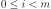
The truncation index.
Returns: remainder_sample :
NumericalSampleThe remainder sample (everyting that comes after the truncation index).
Examples
>>> import openturns as ot >>> ot.RandomGenerator.SetSeed(0) >>> sample = ot.Normal(2).getSample(3) >>> print(sample) [ X0 X1 ] 0 : [ 0.608202 -1.26617 ] 1 : [ -0.438266 1.20548 ] 2 : [ -2.18139 0.350042 ] >>> remainder_sample = sample.split(1) >>> print(sample) [ X0 X1 ] 0 : [ 0.608202 -1.26617 ] >>> print(remainder_sample) [ X0 X1 ] 0 : [ -0.438266 1.20548 ] 1 : [ -2.18139 0.350042 ]
-
stack(sample)¶ Stack (horizontally) the given sample to the current one (in-place).
Parameters: sample :
NumericalSampleSample to stack with compatible size.
Examples
>>> import openturns as ot >>> ot.RandomGenerator.SetSeed(0) >>> sample = ot.Normal(2).getSample(3) >>> print(sample) [ X0 X1 ] 0 : [ 0.608202 -1.26617 ] 1 : [ -0.438266 1.20548 ] 2 : [ -2.18139 0.350042 ] >>> another_sample = ot.Normal(2).getSample(3) >>> print(another_sample) [ X0 X1 ] 0 : [ -0.355007 1.43725 ] 1 : [ 0.810668 0.793156 ] 2 : [ -0.470526 0.261018 ] >>> sample.stack(another_sample) >>> print(sample) [ X0 X1 X0 X1 ] 0 : [ 0.608202 -1.26617 -0.355007 1.43725 ] 1 : [ -0.438266 1.20548 0.810668 0.793156 ] 2 : [ -2.18139 0.350042 -0.470526 0.261018 ]